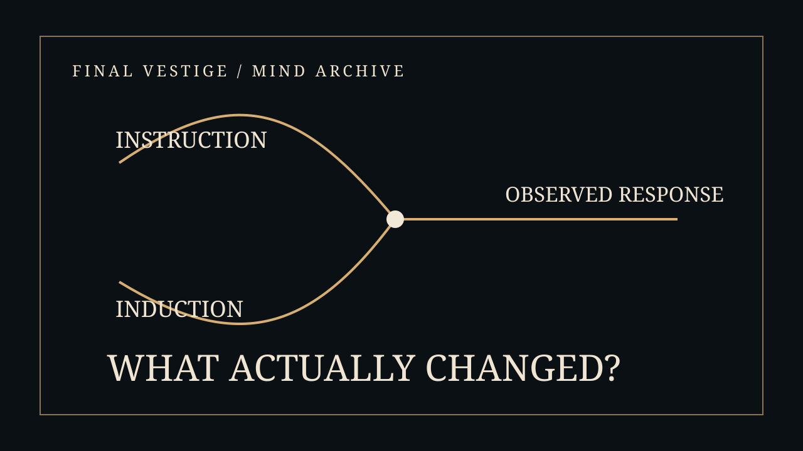

Independent tool guide / Unpublished test B / 13 Nov 2026
Twelve Minutes. A Bigger Question.
Zen12 sells a simple proposition: a short audio session that fits your day. Here is what is in the package, what research can and cannot tell you, and one experiment you can try before paying.
Optional 42-second original film treatment
What a suggestion study actually shows

Optional film is a source-controlled storyboard and transcript, not a playable/hosted video. No autoplay, tracking or video fetch occurs on this draft.
Read the complete 42-second transcript (also available without video)
[0–7s] “What if an instruction changes what you notice?”
[7–14s] “A classic color-word task lets reading compete with the color you need to name.”
[14–21s] “In selected, highly suggestible volunteers, the spoken suggestion sometimes changed the result.”
[21–28s] “A 2025 study tested suggestion and induction separately. Both mattered in that specific attention task.”
[28–35s] “That does not establish the effects of any commercial recording—or a guaranteed benefit.”
[35–42s] “Follow the experiment, check the sources, and decide what the evidence actually says.”
The matched original_suggestion_42s.vtt provides six timed caption cues for eventual approved hosted playback. The video must not replace readable text or force a media download.
01 / The question before checkout
Can twelve minutes be a useful place to start?
People searching for twelve-minute meditation often want a manageable routine rather than another promise to transform their brain. Zen12 offers guided audio in that format. The real buyer's question is simpler: is the structure and content worth the current checkout price for you?
What the seller says it provides
Zen12 describes a progressive meditation-audio program organized into twelve-minute listening sessions. Its Premium package contains twelve levels and 48 MP3 files, alongside guides and training material. It advertises a one-year money-back guarantee; confirm its written terms with the merchant before purchase.
What the scientific evidence does not establish
Experimental studies of hypnotic suggestion, attention and brainwave listening are not product-specific trials of Zen12. They do not establish the seller's claim that twelve minutes produces benefits equivalent to an hour of advanced meditation.
Source: actual Zen12 official sales page, reviewed November 13, 2026. Seller descriptions are not independently verified performance claims.
02 / Evidence before recommendation
The attention experiment that matters
In a 2025 open-access experiment involving 34 highly suggestible adults, a relaxation-based induction and an emotional-numbing suggestion each influenced an experimental attentional-bias measure; combining them did not add a larger measured advantage in the tested design. A second experiment with 38 low-suggestible participants did not show a corresponding significant effect. That is an interesting result about attention under controlled conditions, not a Zen12 outcome study.
Read Brunel and colleagues' study. For the historical question of why an experience and an explanation are not the same thing, inspect Puységur's Animal Magnetism Files.
03 / A useful free alternative
Do this first: twelve minutes, one measurable task
Write down a task you can finish in twelve minutes. Choose a countable target: a paragraph, ten filed documents or a cleared corner of your desk. Work quietly for twelve minutes. Record the finished units and what interrupted you. Repeat on a different day if practical, with the same task type. This is a personal observation routine, not a controlled experiment or a way to diagnose yourself.
If you want a week of guided practice and a thirty-day log, use the existing free Seven Day Focus Fieldbook. It uses Final Vestige's established Jetpack/Dispatch consent route; this page does not ask for your email and does not create a second list.
04 / What you're actually comparing
Zen12 packages are not interchangeable
Beginner and Advanced
The official page lists each as a six-level, 24-MP3 portion of the program, aimed at different experience levels. Do not confuse an introductory half with the complete sequence.
Premium
The seller describes the full twelve levels and 48 MP3 files. On November 13, 2026 its public page displayed $87.99, a dated on-page amount, not a verified checkout total. We do not verify tax, currency adjustments, upsells or availability.
Before any purchase: check the exact product name, final price, downloads, seller contact, refund eligibility and any additional checkout choices. “Free audio” at the seller's gift page is associated with the merchant's separate newsletter, not Final Vestige's Dispatch.
05 / Reasons to buy — and reasons not to
Who might benefit from the format?
A person who wants a fixed-length, progressive audio routine may find the packaging relevant. That is a description of product fit, not a statement that the recording produces a proven change in focus, health or brainwave state.
- “I have no time.” Twelve minutes is a manageable scheduling unit. You can try it at no cost without buying anything.
- “I'm skeptical of brainwave promises.” Good. General studies of attention and binaural beats are mixed and do not substantiate the seller's product-specific equivalence claim.
- “I want a cure for a health problem.” This guide does not recommend Zen12 as treatment and makes no medical claims; seek appropriately qualified care rather than relying on retail audio.
- “What if I don't like it?” Read the merchant's complete refund rules before paying and keep your receipt; a promotional guarantee headline is not evidence of a particular refund being honored.
06 / An intentionally withheld buying route
Compare first. Decide independently.
We can substantiate that Zen12 markets a structured audio course; we cannot yet substantiate Final Vestige's right to earn from recommending it or the seller's advertised effects. An affiliate buying link will only appear after account-specific approval, channel authorization, an issued link, founder release and independent QA.
Potential affiliate disclosure: If you purchase through a future approved link, Final Vestige may earn a commission at no additional cost to you. No earning link is active here.
This control is intentionally non-clickable. There is no substitute redirected, cloaked, or uncredited affiliate route.
Rather investigate the evidence? Browse published historical investigations or start the free Focus Fieldbook.